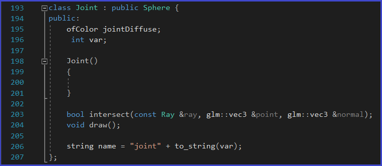
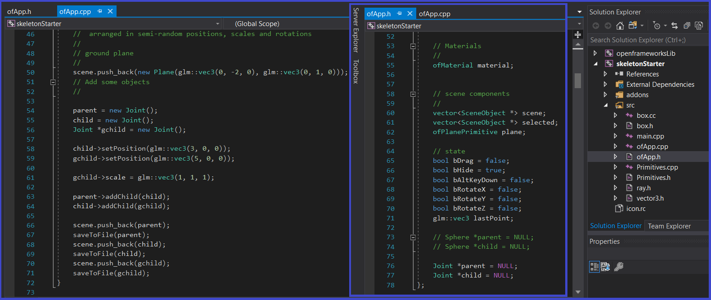
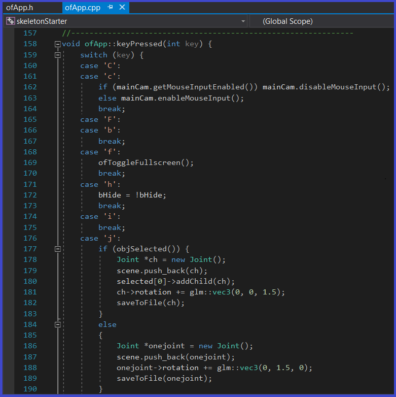
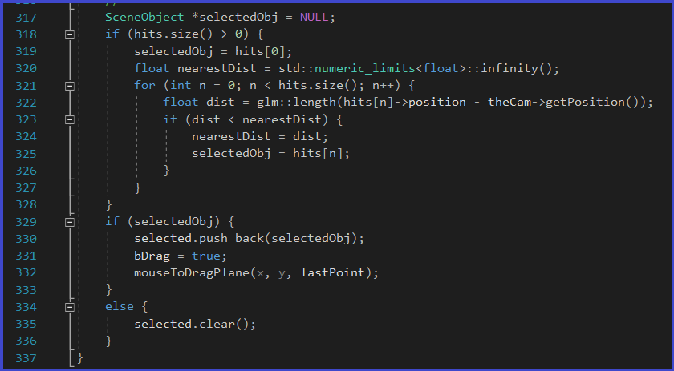
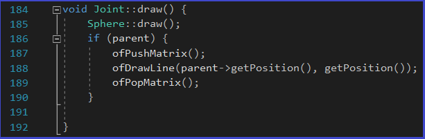
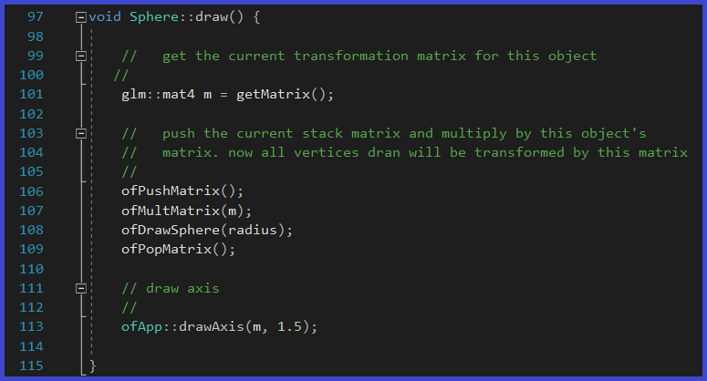
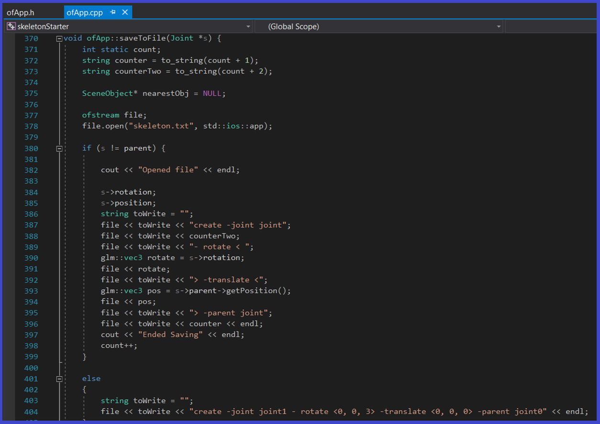

Skeleton Node Project
For this project, I created an animatable Bipedal Skeleton that contains joints. The videos above, show the animated Bipedal Skeleton moving, as well as some features such as cloning.
For this project, I create a joint class, which is the child of a sphere class:

I also added the ability to create new joints dynamically. I do this by using the "j" hot-key. If an existing joint is selected when I add a new joint, then the selected joint has to be a parent of the new one. The names of the joint are assigned as they are created (the first being joint0, then join1, joint2, etc.). I concatenate a number to the string name as the new joint is created. I add the ability for joints to be selected, moved and rotated around their center. I do this with the "x", "y" and "z" keys as rotation modifiers.

I wrote a Joint::draw() functoin that draws the joint but also draws a segmenet (bone) to its parent. The Joint is selectable.

I also created a savetoFile() function that can traverse my skeleton tree and save the structure of it to a script file. I used this format:
Example: create -joint joint1 -rotate <45.0, 90.0, 30.0> -translate <2.0, 2.0, 2.0> -parent joint0;
Note that the translate and rotate values are relative to the parents. The completed project is shown on the top of this page. The last seconds show the file that contains the contents outputted by the saveToFile() function.